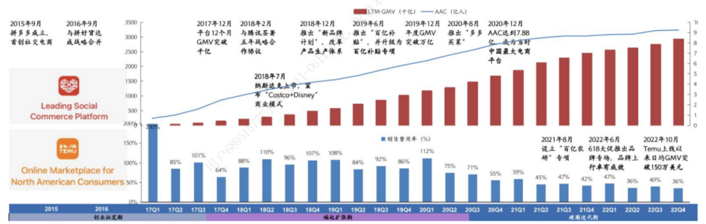
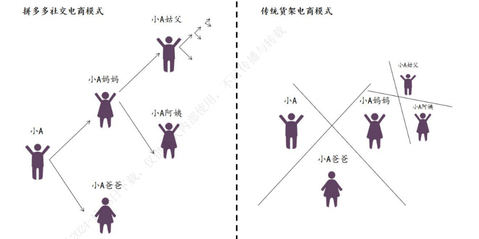
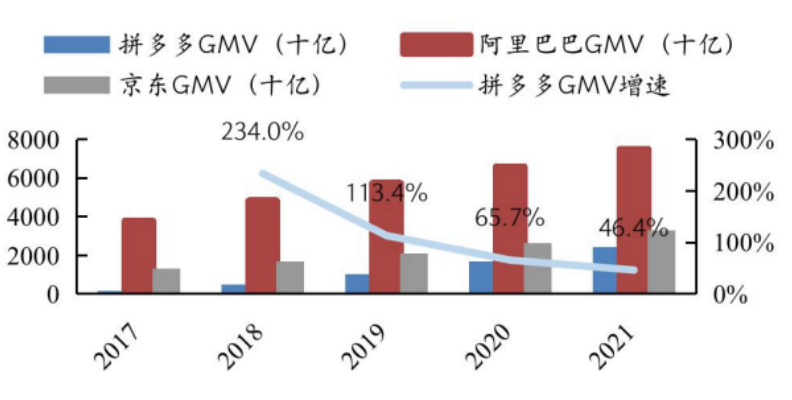
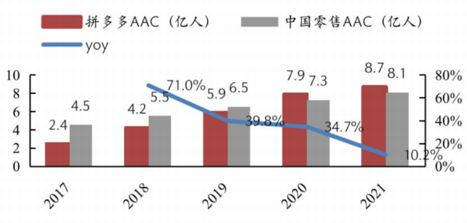
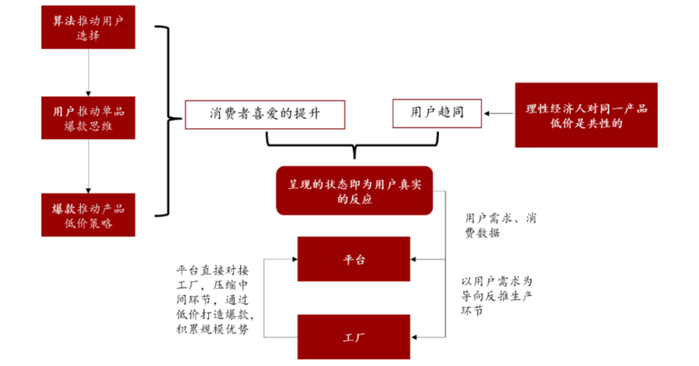

拼多多精准把握三四线下沉市场机遇，借创新社交电商模式和C2M模式实现用户与商家增长、培养消费认知，凭网络效应在电商市场崛起。
拼多多“巨龙”崛起
在数字化浪潮的推动下，品牌影响力的塑造与传播呈现出前所未有的速度和广度。网络时代赋予了商品和服务的认知与传播极强的外部性，使得品牌影响力的扩散如同核聚变一般。众多企业的成功，很大程度上归功于对互联网特性的精准把握和高效运用，以此塑造其强大的品牌力。拼多多正是利用互联网的这一特性，通过创新的社交拼团模式、营销策略以及C2M模式，实现了品牌力的快速积聚和裂变，在短时间内成为中国电商市场的主要竞争者。
自2015年4月成立，拼多多便引领了社交电商的新潮流，颠覆了传统的“人找货”商业模式，开创了“货找人”的新纪元。搭乘中国最大流量平台微信，拼多多迅速吸引了大量用户，成功将“好乐趣”与“多实惠”的理念融为一体，打造出“Costco+Disney”的商业模式，赢得了消费者广泛的认可。
仅用五年时间，拼多多便跃居成为中国用户规模最大的电商平台。截至2024年3月，拼多多已成功进入51个国家和地区，延续了其国内社交电商的特点和低价策略，在国外市场也取得了显著的成功。根据DATE.AI的数据，TEMU的下载量已经超越Amazon等热门应用，位居全球第一，并成为中国市值最高的电商平台。

图1 拼多多发展历程
拼多多的成功离不开其利用互联网塑造强大品牌力，网络时代让大部分商品和服务的认知和传播具有极强的外部性，从而使品牌力的塑造具备了聚变效应，能否有效利用这一点是一个企业能否成功的关键。那么拼多多究竟做对了什么，从而打造了其强大的品牌竞争力？
实力与机遇造就后期之秀
拼多多的成功，得益于其精准捕捉并深耕下沉市场这一广阔蓝海。此外，公司创新性地开辟了社交电商的新模式，网络效应极大促进了用户规模的快速增长，使得拼多多在竞争激烈的电商市场中迅速积累了庞大的用户基础。此外，拼多多还依托C2M的商业模式，进一步巩固了其市场地位。时代的机遇与拼多多的模式创新共同铸就了其成功。
供给端：聚焦低端商家
2015年，淘宝遭遇了假货风波，为了稳固其在中高端市场的领导地位，被迫战略调整，放弃低端市场。与此同时，京东为了更好的物流体验和正品化，进一步进攻中高端市场，两大电商平台迫使大量低端商家出清，寻找新的流量来源，拼多多等电商平台恰好有效承接了这一部分商家供给。
需求端：深耕下沉市场，与供给端形成共振
三四线城市电商渗透率的逐步提升，以及下沉市场供给的不足，为拼多多创始人黄峥提供了机遇。他敏锐捕捉到了这一商机，将拼多多的战略重点迅速转移到尚未充分开拓且潜力巨大的下沉市场中，采用“农村包围城市”的战略，将三、四线城市作为发展主引擎。
拼多多的目标市场主要是价格敏感型消费者，尤其是三四线城市及农村地区的用户。通过提供高性价比的商品，拼多多满足了这些用户对性价比的极致需求。这种购物需求完美地和在淘宝被边缘化的低端商户急迫寻找新流量平台的供给端形势形成完美共振。可以说，需求和供给同步共振是拼多多的商业合理性的基础。
在竞争激烈的电商领域，用户规模是衡量平台成功与否的关键指标之一。作为电商界的后起之秀，拼多多是如何迅速崛起并渗透下沉市场用户的呢？
创新的社交电商模式：病毒裂变式传播造就需求侧规模激增
社交电商模式源于拼多多创始人黄峥对消费心理的深刻洞察。黄峥指出，尽管社交媒体拥有庞大的用户基础，但其商业化潜力远未得到充分挖掘。在传统货架电商模式下，人们之间的购物行为往往是独立且互不关联的。产品的销量主要受使用需求的驱动，这属于传统的“人找货”模式。
与此不同，拼多多的社交电商模式，通过拼团购物和分享优惠等社交互动，将社交元素无缝融入电商购物平台，从而塑造了一个全新的购物环境。这种模式不仅增强了用户的购物体验，还通过社交网络的传播力量，促进了商品销量的增长，实现了消费者之间的互动和共赢，同时还为平台提供了极高的拉新效率。相较于传统的电商平台，拼多多以极低的拉新获客成本迅速攻占了下沉增量市场。

图2 拼多多社交电商模式 VS 传统货架电商模式
模式成立之初，很难想象承载超12.5亿人且用户间密切交织的超级社交软件微信却鲜少与用户数超8.5亿人的电商市场产生良性互动。然而，拼多多通过其创新的社交电商模式，成功地打破了这一局面。
在拼多多社交电商模式下，家人、亲戚、好友和陌生人，通过拼团模式连接在一起，微信的社交关系网络被充分利用。产品的销量不仅由使用需求引起，还能通过社交方式创造需求。当消费者在追求极致低价，需要向身边熟人发起拼团邀请、砍一刀等，形成了一种强大的病毒式拉新效应。
此外,拼多多的营销策略还包括“邀请好友砍一刀”、“百亿补贴”和“现金大转盘”等，一方面建设用户对拼多多的“低价记忆价格”，培育用户形成先逛拼多多比价下单的电商消费心智。另一方面，抓住用户消费心理，对月人均可支配收入低于1000元的8.5亿人而言，“现金大转盘”等活动的预期收益都无不促使用户自发传递社交裂变过程。
与此同时，拼多多极简的风格降低了使用门槛，促使其更容易在下沉市场进行推广。如一物一价、直接付款、送货上门、退货上门取件等特点极大地降低了中老年人群网络购物的难度，使得拼多多在四五线城市和农村很容易进行推广，越来越多的人通过拼多多尝试了网购。这种策略极大地促进了拼多多用户基数的快速增长，从2017年的2.4亿用户迅速增长至2021年的8.7亿。

图3 电商平台GMV及增速（十亿，%）

图4 拼多多与阿里中国零售AAC及增速（亿人，%）
社交电商模式是拼多多用户规模激增的关键因素。通过这种模式，拼多多不仅满足了用户对低价商品的需求，而且通过营销活动巧妙地培养了他们对于低价的心智：要想获得低价好物，就来拼多多。然而，作为电商平台，拼多多不仅要吸引消费者，还需要吸引足够多的供应商和商品，以确保平台上有丰富的供给，这样才能形成一个完整的商业闭环。
网络效应促使供给端聚焦
拼多多之所以能够实现惊人的增长，网络效应扮演了关键角色。这种效应通过拼团、砍价等互动机制，为用户带来了价值，并极大地增强了用户粘性。
随着需求端的不断扩张，商家被吸引至那些拥有庞大用户群体的电商平台。消费者基数的增加，为商家提供了更广阔的销售渠道，从而提高了他们的收入。同时，众多商家为了在竞争中脱颖而出，产生了强烈的商品推广需求。拼多多通过其商品推广竞价系统，不仅满足了商家的推广需求，还为自己带来了可观的营销广告收入，这一系统成为了平台增长和盈利能力的双重驱动力，形成了一个良性的商业循环。
打通消费端与供给端的核心：C2M模式
C2M是“从消费者到生产者”的简称，是一种创新的产销协同模式。通过互联网对消费者的海量信息进行搜集和深度整合，从而精准捕捉消费者的需求脉动，传递给制造商，指导他们按需生产，生成定制化订单。与常见的销售模式不同，C2M跳过了品牌商、代理商、最终销售终端等渠道和中间环节。这种模式不仅提高了生产效率，还使得消费者能够以更优惠的价格获得更符合个人需求的产品，实现了供需双方的共赢。
拼多多作为中国领先的电商平台之一，其商业模式以C2M反向定制模式为核心，通过整合供应链上下游资源，实现了消费者需求与生产制造的高效对接。该模式的实施，不仅极大地缩短了产品从设计到生产再到销售的周期，而且有效降低了库存压力和运营成本，使得拼多多在价格竞争中占据明显优势。拼多多的 C2M 商业模式为消费者提供大量价格低廉的白牌商品，依托高频次消费和高复购率做到稳定的收入增长，形成主要盈利点。

图 5 拼多多C2M模式闭合消费端与供给端
总结
拼多多之所以取得成功，关键在于其精准把握了三四线下沉市场的缺失，并依托其创新的社交电商模式，实现了用户基数的裂变式增长。这种模式通过拼团、砍价等互动方式，不仅增强了用户粘性，还通过社交网络实现了用户基数的裂变式增长。随着用户基数的扩大，拼多多利用其网络效应，成功培养了消费者对平台低价商品的认知，使得“想要低价好物，就来拼多多”成为消费者的共识。
同时，拼多多的网络效应还体现在其对供应商的吸引力上。随着用户基数的扩大，更多商家被吸引至拼多多平台，这不仅丰富了商品供给，也进一步增强了网络效应。此外，拼多多的算法推荐系统也是网络效应的体现。基于海量用户消费行为数据，通过深入分析用户行为，拼多多能够更精准地满足用户需求，从而促进了用户增长和交易质与量的提升。
随着数字化浪潮的不断推进，品牌影响力的构建和传播速度达到了前所未有的水平。在未来发展当中，企业能否精准把握互联网时代下塑造品牌力量的机遇，将直接决定其在竞争激烈的市场中能否占据有利地位。
参考文献
[^1]李天航.电商企业“拼多多”营销策略研究[D].北京化工大学,2023.
[^2]蔡露.拼多多商业模式、财务战略与企业价值研究[D].江苏大学,2023.
[^3]王婧雅.专注高质量增长，拼多多为何重仓“新质商家”？[J].商业文化,2024,(19):74-76.
[^4]王婉懿.新零售时代下拼多多电商平台发展现状分析[J].现代商业,2024,(14)
[^5]阳运韬,于铭.京东与拼多多的商业模式比较研究——基于商业模式画布模型的分析[J].商场现代化,2024
[^6]汪玉慧.浅析拼多多在电商领域的创新与发展[J].商展经济,2024,(09)
[^7]张宇瑄.拼多多电商平台盈利模式及社交营销策略研究——以社交营销策略为例[J].商展经济,2024,(03)